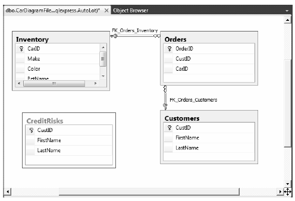

Let’s wrap up this examination of the connected layer of ADO.NET by taking a look at the concept of a database transaction. Simply put, a transaction is a set of database operations that must either all work or all fail as a collective unit. As you might imagine, transactions are quite important to ensure that table data is safe, valid, and consistent.
Transactions are important when a database operation involves interacting with multiple tables or multiple stored procedures (or a combination of database atoms). The classic transaction example involves the process of transferring monetary funds between two bank accounts. For example, if you were to transfer $500.00 from your savings account into your checking account, the following steps should occur in a transactional manner:
It would be an extremely bad thing if the money were removed from the savings account, but not transferred to the checking account (due to some error on the bank’s part) because then you would be out $500.00! However, if these steps are wrapped up into a database transaction, the DBMS ensures that all related steps occur as a single unit. If any part of the transaction fails, the entire operation is rolled back to the original state. On the other hand, if all steps succeed, the transaction is committed.
Note You might be familiar with the acronym ACID from looking at transactional literature. This represents the four key properties of a prim-and-proper transaction: Atomic (all or nothing); Consistent (data remains stable throughout the transaction); Isolated (transactions do not step on each other’s feet); and Durable (transactions are saved and logged).
It turns out that the .NET platform supports transactions in a variety of ways. This chapter will look at the transaction object of your ADO.NET data provider (SqlTransaction, in the case of System.Data.SqlClient). The .NET base class libraries also provide transactional support within numerous APIs, including the following:
In addition to the baked-in transactional support found within the .NET base class libraries, it is also possible to use the SQL language of your database management system. For example, you could author a stored procedure that uses the BEGIN TRANSACTION, ROLLBACK, and COMMIT statements.
While transactional-aware types exist throughout the base class libraries, you will focus on transaction objects found within an ADO.NET data provider, all of which derive from DBTransaction and implement the IDbTransaction interface. Recall from the beginning of this chapter that -IDbTransaction defines a handful of members:
public interface IDbTransaction : IDisposable { IDbConnection Connection { get; } IsolationLevel IsolationLevel { get; } void Commit(); void Rollback(); }
Notice the Connection property, which returns a reference to the connection object that initiated the current transaction (as you’ll see, you obtain a transaction object from a given connection object). You call the Commit() method when each of your database operations have succeeded. Doing this causes each of the pending changes to be persisted in the data store. Conversely, you can call the Rollback() method in the event of a runtime exception, which informs the DMBS to disregard any pending changes, leaving the original data intact.
Note The IsolationLevel property of a transaction object allows you to specify how aggressively a transaction should be guarded against the activities of other parallel transactions. By default, transactions are isolated completely until committed. Consult the .NET Framework 4.0 SDK documentation for full details regarding the values of the IsolationLevel enumeration.
Beyond the members defined by the IDbTransaction interface, the SqlTransaction type defines an additional member named Save(), which allows you to define save points. This concept allows you to roll back a failed transaction up until a named point, rather than rolling back the entire transaction. Essentially, when you call Save() using a SqlTransaction object, you can specify a friendly string moniker. When you call Rollback(), you can specify this same moniker as an argument to perform an effective partial rollback. Calling Rollback() with no arguments causes all of the pending changes to be rolled back.
Now let’s look at how you use ADO.NET transactions. Begin by using the Server Explorer of Visual Studio 2010 to add a new table named CreditRisks to the AutoLot database, which has the same exact columns as the Customers table you created earlier in this chapter: CustID, which is the primary key; FirstName; and LastName. As its name suggests, CreditRisks is where you banish the undesirable customers who fail a credit check. Assuming you have added this new table to your database diagram, you should now see the AutoLot implementation shown in Figure 21-14.
Figure 21-14 The interconnected Orders, Inventory, and Customers tables
Like the earlier savings-to-checking money transfer example, this example, where you move a risky customer from the Customers table into the CreditRisks table, should occur under the watchful eye of a transactional scope (after all, you will want to remember the ID and names of those who are not creditworthy). Specifically, you need to ensure that either you successfully delete the current credit risks from the Customers table and add them to the CreditRisks table, or you need to ensure that neither of these database operations occurs.
Note In a production environment, you would not need to build a whole new database table to capture high risk customers; instead, you could add a Boolean column named IsCreditRisk to the existing Customers table. However, this new table lets you play with a simple transaction.
Now let’s look at how you work with ADO.NET transactions programmatically. Begin by opening the AutoLotDAL Code Library project you created earlier and add a new public method named ProcessCreditRisk() to the InventoryDAL class to deal with perceived a credit risks (note that this example avoids using a parameterized query to keep the implementation simple; however, you’d want use such a query for a production-level method):
// A new member of the InventoryDAL class. public void ProcessCreditRisk(bool throwEx, int custID) { // First, look up current name based on customer ID. string fName = string.Empty; string lName = string.Empty; SqlCommand cmdSelect = new SqlCommand( string.Format("Select * from Customers where CustID = {0}", custID), sqlCn); using (SqlDataReader dr = cmdSelect.ExecuteReader()) { if(dr.HasRows) { dr.Read(); fName = (string)dr["FirstName"]; lName = (string)dr["LastName"]; } else return; } // Create command objects that represent each step of the operation. SqlCommand cmdRemove = new SqlCommand( string.Format("Delete from Customers where CustID = {0}", custID), sqlCn); SqlCommand cmdInsert = new SqlCommand(string.Format("Insert Into CreditRisks" + "(CustID, FirstName, LastName) Values" + "({0}, '{1}', '{2}')", custID, fName, lName), sqlCn); // You will get this from the connection object. SqlTransaction tx = null; try { tx = sqlCn.BeginTransaction(); // Enlist the commands into this transaction. cmdInsert.Transaction = tx; cmdRemove.Transaction = tx; // Execute the commands. cmdInsert.ExecuteNonQuery(); cmdRemove.ExecuteNonQuery(); // Simulate error. if (throwEx) { throw new Exception("Sorry! Database error! Tx failed..."); } // Commit it! tx.Commit(); } catch (Exception ex) { Console.WriteLine(ex.Message); // Any error will roll back transaction. tx.Rollback(); } }
Here, you use an incoming bool parameter to represent whether you will throw an arbitrary exception when you attempt to process the offending customer. This allows you to simulate an unforeseen circumstance that will cause the database transaction to fail. Obviously, you do this here only for illustrative purposes; a true database transaction method would not want to allow the caller to force the logic to fail on a whim!
Note that you use two SqlCommand objects to represent each step in the transaction you will kick off. Once you obtain the customer’s first and last name based on the incoming custID parameter, you can obtain a valid SqlTransaction object from the connection object using BeginTransaction(). Next, and most importantly, you must enlist each command object by assigning the Transaction property to the transaction object you have just obtained. If you fail to do so, the Insert/Delete logic will not be under a transactional context.
After you call ExecuteNonQuery() on each command, you throw an exception if (and only if) the value of the bool parameter is true. In this case, all pending database operations are rolled back. If you do not throw an exception, both steps will be committed to the database tables once you call Commit(). Now compile your modified AutoLotDAL project to ensure you do not have any typos.
You could update your previous AutoLotCUIClient application with a new option to invoke the ProcessCreditRisk() method; instead, however, you will create a new Console Application named AdoNetTransaction to accomplish this. Set a reference to your AutoLotDAL.dll assembly and import the AutoLotConnectedLayer namespace.
Next, open your Customers table for data entry by right-clicking the table icon from the Server Explorer and selecting Show Table Data. Now add a new customer who will be the victim of a low credit score:
Finally, update your Main() method as follows:
static void Main(string[] args) { Console.WriteLine("***** Simple Transaction Example *****\n"); // A simple way to allow the tx to succeed or not. bool throwEx = true; string userAnswer = string.Empty; Console.Write("Do you want to throw an exception (Y or N): "); userAnswer = Console.ReadLine(); if (userAnswer.ToLower() == "n") { throwEx = false; } InventoryDAL dal = new InventoryDAL(); dal.OpenConnection(@"Data Source=(local)\SQLEXPRESS;Integrated Security=SSPI;" + "Initial Catalog=AutoLot"); // Process customer 333. dal.ProcessCreditRisk(throwEx, 333); Console.WriteLine("Check CreditRisk table for results"); Console.ReadLine(); }
If you were to run your program and elect to throw an exception, you would find that Homer is not removed from the Customers table because the entire transaction has been rolled back. However, if you did not throw an exception, you would find that Customer ID 333 is no longer in the Customers table and has been placed in the CreditRisks table instead.
Source Code You can find the AdoNetTransaction project under the Chapter 21 subdirectory.